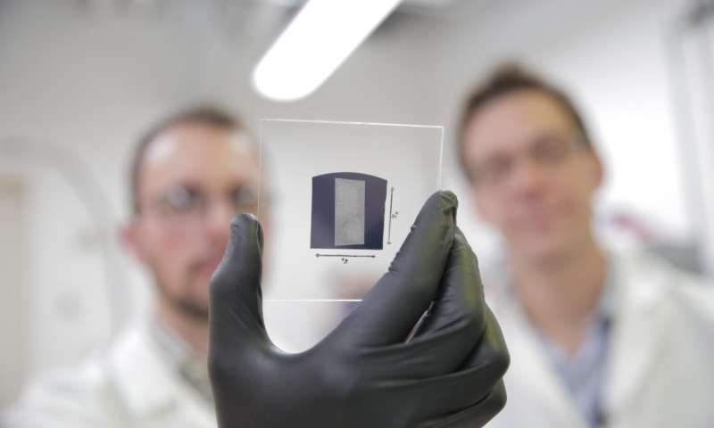

For decades, scientists have tried to harness the unique properties of carbon nanotubes to create high-performance electronics that are faster or consume less power—resulting in longer battery life, faster wireless communication and faster processing speeds for devices like smartphones and laptops.
But a number of challenges have impeded the development of high-performance transistors made of carbon nanotubes, tiny cylinders made of carbon just one atom thick. Consequently, their performance has lagged far behind semiconductors such as silicon and gallium arsenide used in computer chips and personal electronics.
Now, for the first time, University of Wisconsin-Madison materials engineers have created carbon nanotube transistors that outperform state-of-the-art silicon transistors.
Led by Michael Arnold and Padma Gopalan, UW-Madison professors of materials science and engineering, the team's carbon nanotube transistors achieved current that's 1.9 times higher than silicon transistors. The researchers reported their advance in a paper published Friday (Sept. 2) in the journal Science Advances.
"This achievement has been a dream of nanotechnology for the last 20 years," says Arnold. "Making carbon nanotube transistors that are better than silicon transistors is a big milestone. This breakthrough in carbon nanotube transistor performance is a critical advance toward exploiting carbon nanotubes in logic, high-speed communications, and other semiconductor electronics technologies."
This advance could pave the way for carbon nanotube transistors to replace silicon transistors and continue delivering the performance gains the computer industry relies on and that consumers demand. The new transistors are particularly promising for wireless communications technologies that require a lot of current flowing across a relatively small area.
As some of the best electrical conductors ever discovered, carbon nanotubes have long been recognized as a promising material for next-generation transistors.
Carbon nanotube transistors should be able to perform five times faster or use five times less energy than silicon transistors, according to extrapolations from single nanotube measurements. The nanotube's ultra-small dimension makes it possible to rapidly change a current signal traveling across it, which could lead to substantial gains in the bandwidth of wireless communications devices.
But researchers have struggled to isolate purely carbon nanotubes, which are crucial, because metallic nanotube impurities act like copper wires and disrupt their semiconducting properties—like a short in an electronic device.
 The UW-Madison team used polymers to selectively sort out the semiconducting nanotubes, achieving a solution of ultra-high-purity semiconducting carbon nanotubes.
"We've identified specific conditions in which you can get rid of nearly all metallic nanotubes, where we have less than 0.01 percent metallic nanotubes," says Arnold.
Placement and alignment of the nanotubes is also difficult to control. To make a good transistor, the nanotubes need to be aligned in just the right order, with just the right spacing, when assembled on a wafer. In 2014, the UW-Madison researchers overcame that challenge when they announced a technique, called "floating evaporative self-assembly," that gives them this control. The nanotubes must make good electrical contacts with the metal electrodes of the transistor. Because the polymer the UW-Madison researchers use to isolate the semiconducting nanotubes also acts like an insulating layer between the nanotubes and the electrodes, the team "baked" the nanotube arrays in a vacuum oven to remove the insulating layer. The result: excellent electrical contacts to the nanotubes.
The researchers also developed a treatment that removes residues from the nanotubes after they're processed in solution. "In our research, we've shown that we can simultaneously overcome all of these challenges of working with nanotubes, and that has allowed us to create these groundbreaking carbon nanotube transistors that surpass silicon and gallium arsenide transistors," says Arnold. The researchers benchmarked their carbon nanotube transistor against a silicon transistor of the same size, geometry and leakage current in order to make an apples-to-apples comparison.
They are continuing to work on adapting their device to match the geometry used in silicon transistors, which get smaller with each new generation. Work is also underway to develop high-performance radio frequency amplifiers that may be able to boost a cellphone signal. While the researchers have already scaled their alignment and deposition process to 1 inch by 1 inch wafers, they're working on scaling the process up for commercial production. Arnold says it's exciting to finally reach the point where researchers can exploit the nanotubes to attain performance gains in actual technologies. "There has been a lot of hype about carbon nanotubes that hasn't been realized, and that has kind of soured many people's outlook," he says. "But we think the hype is deserved. It has just taken decades of work for the materials science to catch up and allow us to effectively harness these materials."
September 2, 2016 by Adam Malecek